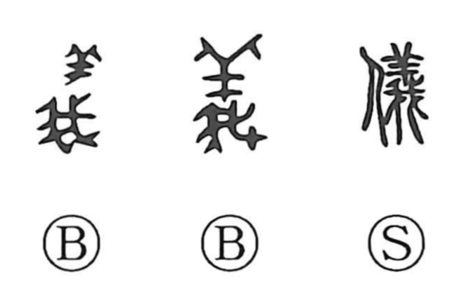

儀

Kun: | On: gi
ceremony ・ rite ・ decorum ・ appearance
Explanation
儀 is a phono-semantic character built on 義 as its phonetic core. In ancient writing, 義 shows a sheep cut and inspected to certify a flawless victim for the gods, a scene that came to stand for what is proper and right. 儀 turns this toward human conduct: it evokes the solemn bearing and formal demeanor shown when performing offerings according to ritual protocol. From that ceremonial setting it broadened to mean propriety in etiquette, outward aspect or state of affairs, and what is correct or in accord with rule, and it is widely used in words relating to rites and decorum.